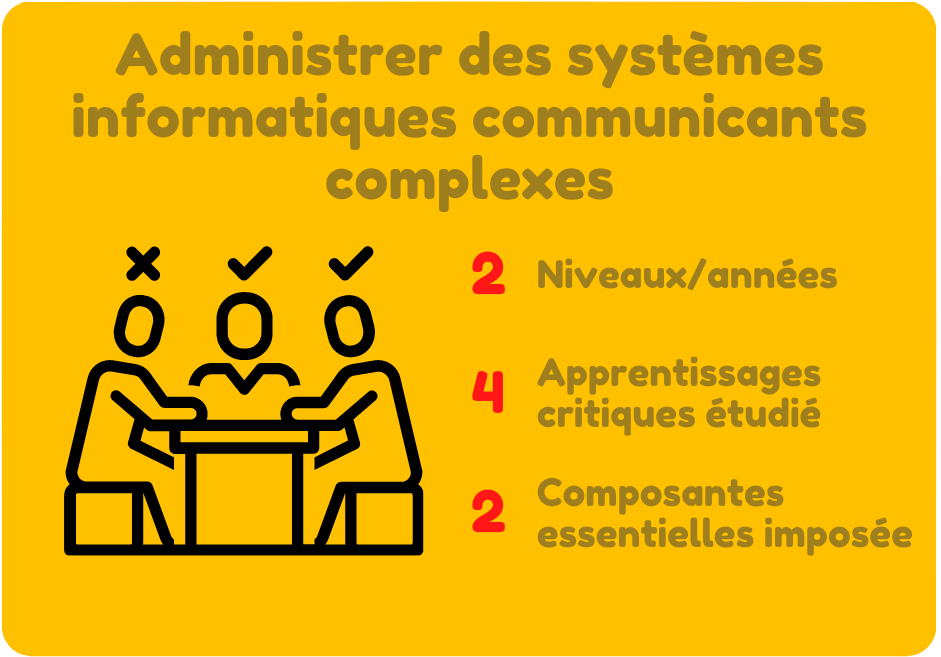
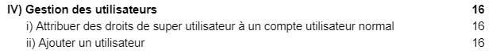
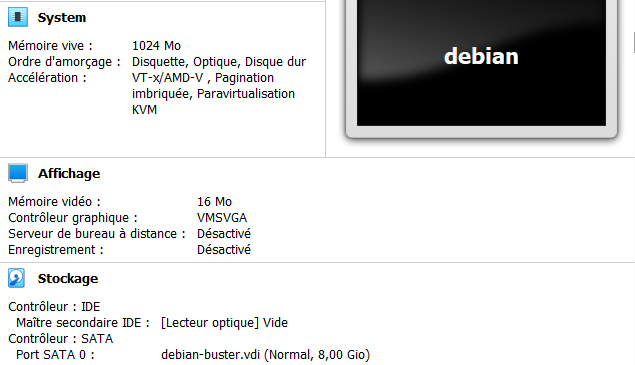
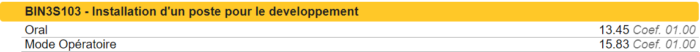
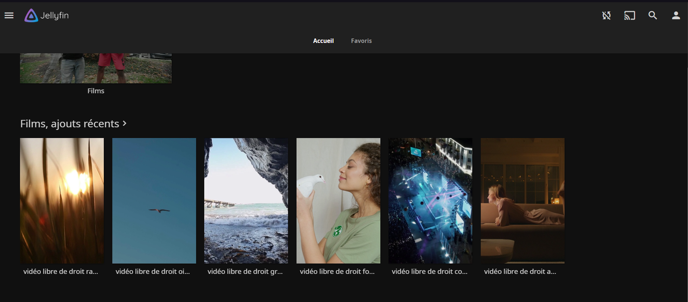
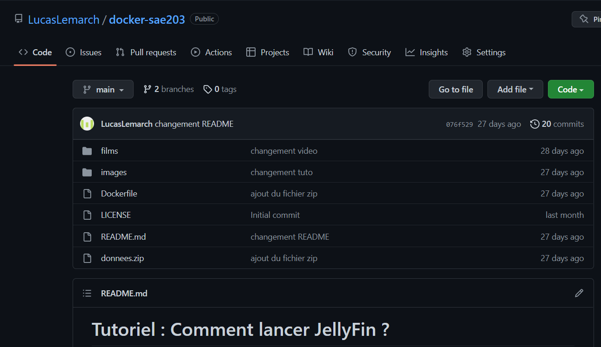

PORTFOLIO
Lemarchand Lucas B2
2021/2024
Lemarchand Lucas B2
2021/2024
De son nom entier, cette compétence se nomme : Administrer des systèmes informatiques communicants complexes. Elle s'étend sur 2 années et est la compétence numéro 3 du BUT Informatique.
toutes les composantes sous différents niveaux de maitrise (acquis/en cours/non acquis)
Durant la SAE 1.03 nous devions installer et configurer un système linux sur une machine virtuelle. Linux est un système multitâche et nous avons ajouté/administré plusieurs utilisateurs.
"Passage du sommaire de la SAE 1.03"
Nous devions rendre un Mode opératoire expliquant comment toutes les manipulations à faire pour avoir notre Système fonctionnel prêt à être utiliser. Etant donné que nous savons maintenant expliquer les fonctionnalités de base, nous savons aussi les utiliser. C’est pourquoi je pense maîtriser cet apprentissage critique.
Pendant la SAE SAE 1.03, nous devions créer une machine virtuelle. Pour cela il fallait lui attribuer des parties de composants matériel de notre ordinateur, comme de la mémoire vive et un espace de stockage. Cette pratique ne pourrait pas être faite sans la connaissance des différentes parties.
"Attribution des composant pour la machine virtuelle de la SAE 1.03"
Ensuite lors de notre installation de notre système linux il fallait configurer et installer une bonne partie des composants logiciel de notre système. Ce qui fait que nous en connaissons quelques-unes.
En ce qui concerne cet apprentissage critique, j’estime le maîtriser partiellement car nous sommes seulement en 1ère année et nous n’avons vu que les bases. Nous pourrons le maîtriser entièrement seulement l’année prochaine en pratiquant nos cours de système d’exploitation.
Durant la SAE 1.03 nous avons installer un système d’exploitation linux que nous avons ensuite configuré pour son utilisation. Par exemple nous avons mis le système à jour, nous avons installé un environnement graphique ou encore nous avons activé le périphérique.
Etant donné que nous avons eu une bonne note pour ce travail, j'en conclu que je maitrise cet apprentissage critique.
"Notes obtenues lors de la SAE 1.03"
Pendant la SAE 2.03, nous devions à l’aide de docker, installer un service réseau. Avec mon groupe nous avons configurer le service de vidéo à la demande JellyFin.
"Interface de JellyFin pour la SAE 2.03"
Il fallait produire tout ça de manière à ce que ce soit simple à installer donc nous avons créé un tutoriel ainsi qu’un dépôt GitHub dans lequel était présent nos fichiers d’installation de notre service
"GitHub de la SAE 2.03"
Pour prouver que l’on sait l’installer sur un poste de travail il y avait une démonstration à faire devant un des professeurs gérant la SAE. Comme vous pouvez le voir mes notes sont très bonnes ce qui fait que j’estime maitriser cet apprentissage critique.

"Notes obtenues lors de la SAE 2.03"
Durant les SAE 1.03 et SAE 2.03 nous n’avons pas arrêté de faire des manipulations dans l’architecture de nos systèmes. Que ce soit pour installer ou configurer quelque chose, avoir les connaissances de bases est obligatoire pour réussi. Pour la SAE 2.03 nous avons choisi le sujet le plus complexe, celui qui a donc le plus besoin de ces bases pour être réussi.
Je pense avoir respecté ce composant essentiel et avoir acquis ces connaissances en vu de la note que j’ai obtenue lors de cette SAE.
Lors de la SAE 2.03 nous devions créer une image DockerFile, et pour cela il fallait y rentrer des commandes shell. Afin de faire le DockerFile le plus optimisé nous avons donc dû prendre en compte toutes les erreurs que nous avons eu lors de notre programmation.
Etant donné que nous avons pris le sujet le plus difficile, nous avons eu pleins d’erreurs au cours du projet. Cependant nous avons su les corriger et rendre un projet qui n’en contenait pas. Je pense donc avoir respecter ce composant essentiel.